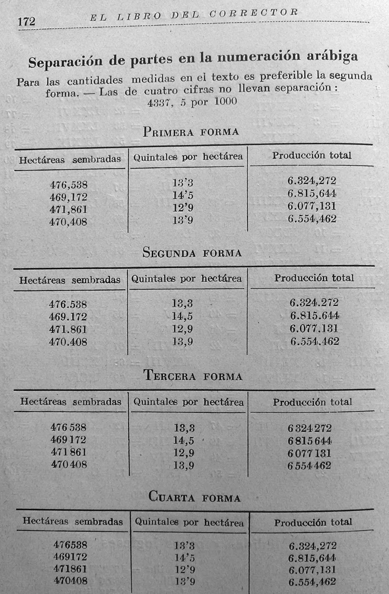

La marca decimal
Tipografía y notaciones científicas
Versión 1.5. 2019-06-09.
Lo sabemos: el signo que sirve para separar los decimales (marca decimal, signo decimal, separador decimal) es, en español, la coma… ¿O tal vez no?
En primer lugar, es preciso señalar que en la actualidad tanto el SI como la norma ISO 80000-1 (del 2009) admiten la coma y el punto, y que las Academias de la Lengua recomiendan el punto. Por otra parte, las leyes de los diferentes paises pueden establecer sus regulaciones[1].
En español no ha habido tradicionalmente un criterio universal para el signo con esta función, aunque tal vez el más empleado no haya sido ni la coma ni el punto, sino el apóstrofo, a menudo invertido. Tan arraigada está esta notación, que todavía es muy frecuente en el uso diario, y en ocasiones se ve incluso en literatura científica (al menos en España).
En El libro del corrector, de Melú y Millá, se comprueba que por 1939 todavía no había un criterio único para las marcas del decimal y de los miles. Da cuatro formas: 1) apóstrofo para decimales, coma para miles y punto para millones; 2) coma para decimales, punto para miles y millones; 3) coma para decimales, espacio fino para miles y millones (que se ajusta al SI y la ISO, por lo que esta variante no es ajena al español); 4) es la más extraña: es igual a la primera, pero aparentemente no puntúa cuando no se llega al millón.

Ver página del libro en una ventana nueva.
En el libro Corrección de pruebas tipográfica, de Ramos Martínez (1963), se comprueba que la costumbre del punto decimal no es nueva en México, y que está incluso avalada por uno de los tratados de corrección más importantes escritos en el país. Así, en la página 138 escribe:
Cuando se trata de cantidades grandes, la puntuación facilita la lectura, y en vez de 8 329 556.31, estaría mejor: 8.329,556.31, [sic] porque todos forman una unidad.
Obsérvese la singularidad de que el punto tiene dos funciones: millones y decimales (!), por lo que el número, sin contexto, es ininteligible. Sin embargo, esta alternancia no era rara antaño. En la página siguiente da otro empleo a la coma, aparte de los miles: la separación de la hora y los minutos:
Los minutos no son decimales y, por tanto, lo correcto es: 7,5 horas [y no 7.05 horas, para las siete y cinco].
Ramos Martínez es extremadamente conservador en lo que atañe a la ortotipografía, lo que indica que el punto en los años 60 no era algo inusual en México.
La reforma del 2003 del SI en la que se abría la posibilidad de usar punto tuvo entre sus principales artífices, precisamente, México, y en el 2009, con el cambio ese año de la norma ISO, se introdujo una modificación en la norma NOM-008-SCFI-2002 para que la coma no fuera el único signo admitido.
Estas vacilaciones no son exclusivas del español. Los países que más claro han tenido qué signo debía separar los miles han sido Inglaterra por un lado, que pronto se decantó por el punto (aunque con variaciones en su posición), y Francia y Alemania por otro, que claramente optaron por la coma. Según Cajori (en A history o mathematical notations), el signo dominante en Italia y Bélgica fue también el punto hasta el siglo XIX, y en Austria perduró hasta más tarde (los cinéfilos que sean buenos observadores lo pueden comprobar en El tercer hombre, rodada en Viena).
¿Por qué en el siglo XX casi toda la Europa continental acaba empleando la coma? Es difícil saberlo, pero un posible factor es que las lenguas de la ciencia y las más prestigiosas en las publicaciones del primer tercio del siglo eran, precisamente, el francés y el alemán, las dos lenguas de la coma. Si a eso añadimos que en sus orígenes las normas de la ISO tomaron como modelo las DIN alemanas y que por entonces el este de Asia apenas tenía peso (desde luego, no el que tiene en la actualidad), podemos entender que se impusiera la coma como marca decimal.
La falta de uniformidad en el mundo hispanohablante y la preferencia por el apóstrofo, un signo que era casi inexistente en otros países y que había que abandonar, pueden ser los motivos por el que en la actualidad haya habido un cisma: España miró a Francia y Alemania (con el beneplácito de la ISO), y México y Centroamérica a Estados Unidos.
Hoy la ISO, en la norma 80000-1, del Sistema Internacional de Magnitudes, acepta ambos signos, al igual que lo hizo antes el SI, aunque sigue prefiriendo la coma. Las Academias de la Lengua, por su parte, han optado (con valentía, todo sea dicho) por recomendar el punto decimal en la reciente Ortografía, aunque siguen admitiendo la coma.
Notas
1. ^ Los Estados suelen reservarse la competencia sobre pesas y medidas, incluyendo las unidades. Dado que casi siempre se limitan a trasponer lo establecido en el SI, esta ultima norma tiene en la práctica un rango claramente superior a las recomendaciones de instituciones privadas como la ISO y las Academias de la Lengua.

{kind=link}